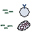

Carlos Castrillon, PhD
Instructor
Department of Medicine, Division of Rheumatology · Emory University School of Medicine · Atlanta, GA
I am a junior faculty scientist at Emory University School of Medicine studying the biology of human B cells and plasma cells, with a focus on autoimmune disease and next-generation therapeutics.
My research program centers on two main areas: the modulation of BCR signaling in systemic lupus erythematosus (SLE), supported by a career development award from the Lupus Research Alliance, and the use of mRNA technology to modulate and engineer primary human immune cells — both as therapeutics and as tools for basic research and early-stage drug discovery.

My work integrates wet- and dry-lab multiomics approaches. I am currently developing my independent program under the mentorship of Dr. Iñaki Sanz and Dr. Frances Eun-Hyung Lee.
Happy to discuss research, collaborations, or questions about my work. Best reached by email.